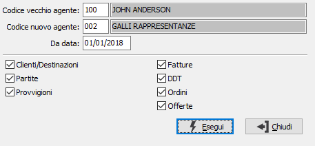

Sostituzione codice agente
Il programma consente di effettuare la sostituzione di un agente a partire da una determinata data.

CODICE VECCHIO AGENTE: indica il codice dell'agente che s'intende sostituire. Sul campo sono attive le funzioni di ricerca (F9) sulla tabella stessa.
CODICE NUOVO AGENTE: indica il codice dell'agente con cui sostituire il vecchio codice. Sul campo sono attive le funzioni di ricerca (F9) sulla tabella stessa.
DA DATA: indica la data, dalla quale, effettuare la sostituzione dei codici.
CLIENTI/DESTINAZIONI: definisce se effettuare la sostituzione dell'agente sui clienti e sulle destinazioni (casella con segno di spunta).
PARTITE: definisce se effettuare la sostituzione dell'agente sulle partite aperte (casella con segno di spunta).
PROVVIGIONI: definisce se effettuare la sostituzione dell'agente sulle provvigioni (casella con segno di spunta).
FATTURE: definisce se effettuare la sostituzione dell'agente sulle fatture (casella con segno di spunta).
DDT: definisce se effettuare la sostituzione dell'agente sui DDT (casella con segno di spunta).
ORDINI: definisce se effettuare la sostituzione dell'agente sulle conferme d'ordine (casella con segno di spunta).
OFFERTE: definisce se effettuare la sostituzione dell'agente sulle offerte (casella con segno di spunta).